Talking Matrices: from embeddings to BERT.
This tutorial is the crash-course prerequisite for the rest of the semester. In twenty-three deliberately terse slides it walks from the earliest attempts to turn a word into a vector, through the MLP, RNN, LSTM and GRU that dominated the 2010s, into attention and the transformer, and finishes with the muppet family, ELMo, BERT and their descendants. If any of these names still feel like black boxes to you, this is the deck to sit with.
§0The deck at a glance
The slide-deck's own navigation bar tells you the plan: four sections, named ini di beninging, recurrence, optimus prime and muppets. Playful surface, serious spine. Read it as: the era before neural nets, the era of recurrence, the transformer takeover, and the pretrained encoder family that followed. Each section is short. None of them is optional if you want the next twenty lectures to make sense.
§0The opener
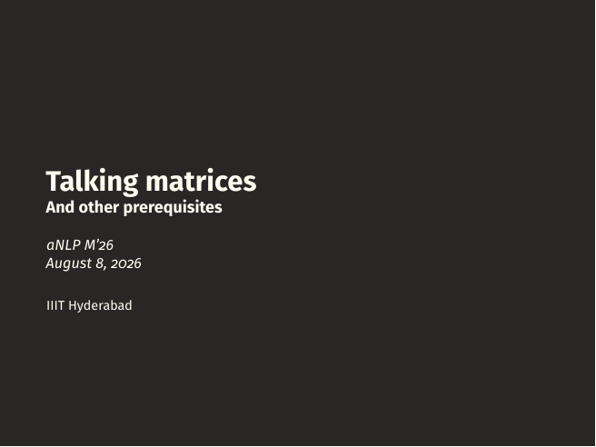
On the slide
The title slide. Talking Matrices: And other prerequisites, delivered on 8 August 2026 at IIIT Hyderabad.
What it means
The joke in the title is that all the neural machinery you will meet in this course is, at heart, matrices talking to matrices. A word becomes a row of numbers, a sentence becomes a stack of rows, a network is a chain of matrix multiplies with a nonlinearity between each pair, and training is the slow rearrangement of those numbers by gradient descent. Everything else, the diagrams, the exotic cell drawings, the muppet mascots, is just naming schemes over that same operation.
Whenever a later slide looks intimidating, ask yourself: which matrices are being multiplied, and what shape is the result. That is almost always the whole story.
§1ini di beninging(the early days)
Five slides on how NLP represented a word before deep learning got good, and the little feed-forward network that everything after this section is a variation on.
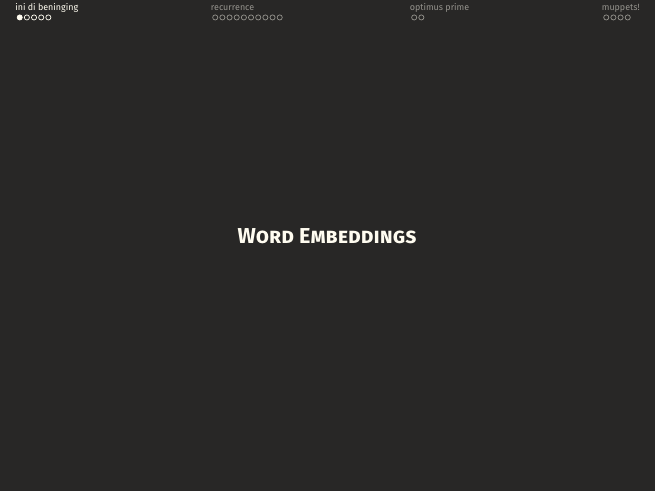
A section divider. Everything until page 06 is about the pre-deep-learning question: how do you turn a word into a vector at all?
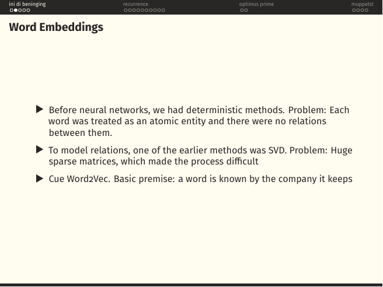
On the slide
A three-beat history of word representation. Before neural nets, words were atoms, one-hot vectors with no notion of similarity between "king" and "queen". People tried to fix this with count-based statistics and SVD on a co-occurrence matrix, which worked in principle but produced enormous, mostly-zero matrices. Then Word2Vec (Mikolov, 2013) reframed the problem: learn a dense vector for each word by predicting its context.
What it means
The Firthian slogan on the last bullet, "a word is known by the company it keeps", is the entire justification for distributional semantics. If two words show up in the same neighbourhoods (doctor, nurse) their meanings are close; if they never co-occur (doctor, banana) they are not. Every embedding technique from Word2Vec through GloVe to BERT's contextual embeddings is a refinement of this one bet.
An SVD on a term-context matrix gives you ; keep the top singular values and each row of is a -dimensional word vector. Word2Vec ends up learning something startlingly similar, but stochastically, with a shallow network, and without ever materialising the giant matrix.
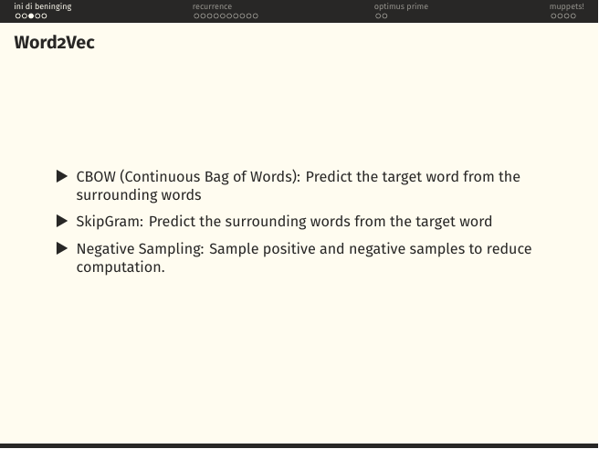
On the slide
The three ingredients that make Word2Vec work: two training objectives and one computational trick.
- CBOW (Continuous Bag of Words): given the context words in a small window, predict the missing centre word. Averages the context embeddings and asks a softmax to name the target.
- SkipGram: flip it. Given the centre word, predict each context word independently. Empirically better for rare words because every occurrence teaches the model something.
- Negative sampling: the honest softmax over a 100K-word vocabulary is unaffordable. Replace it with a binary classifier, is this a real (word, context) pair or a randomly sampled fake one?, and you only touch a handful of vectors per update.
What it means
Notice what Word2Vec is not: it is not a deep network. It is a shallow, essentially linear model whose only nonlinearity is the sigmoid on the final classifier. The magic is not in depth; it is in the objective. You train on billions of context windows and the geometry of the resulting embedding space starts to encode analogies, the famous .
These static embeddings are the input layer of every RNN and early transformer you will meet later. When the muppets arrive at page 20 the story shifts: embeddings become contextual, computed on the fly per sentence. Same idea, dialled up.
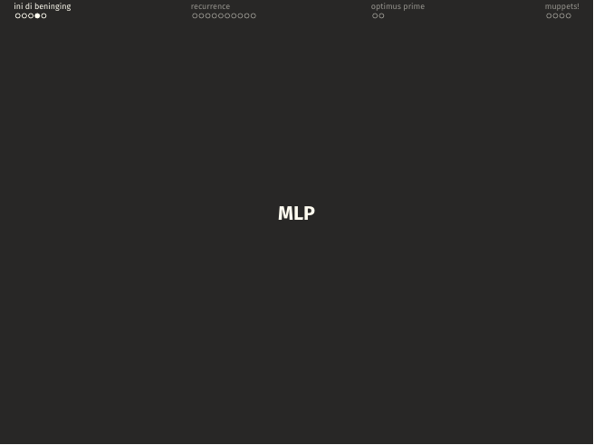
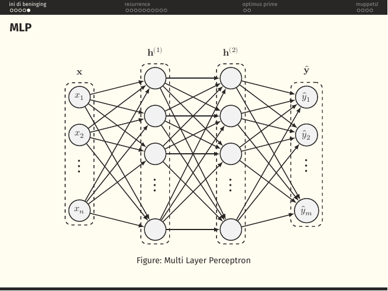
On the slide
A section divider and then the diagram everyone draws when they say "neural network": an input , two fully-connected hidden layers and , and an output . Every arrow is a weight; every circle applies a nonlinearity to the sum of its inputs.
What it means
An MLP is a stack of affine transforms interleaved with nonlinearities. In matrix form:
That is the whole engine. A universal function approximator in principle. But look what it lacks: nothing in this picture cares that the input is a sequence. Feed it "the cat sat" and "sat cat the" as bags of one-hots and it will happily produce the same output. That defect is the reason the next section exists.
The MLP is not a rival to the transformer. It is a component of the transformer, the feed-forward block inside every layer is exactly this two-layer MLP, applied position-wise. You never leave the MLP behind; you just wrap it in cleverer plumbing.
§2recurrence(RNNs and their kin)
Ten slides on the family of networks that dominated NLP between about 2013 and 2017: the vanilla RNN, the LSTM and GRU that fixed its gradient problems, the bidirectional trick, and Bahdanau's attention, the crack in the wall through which the transformer would soon walk.
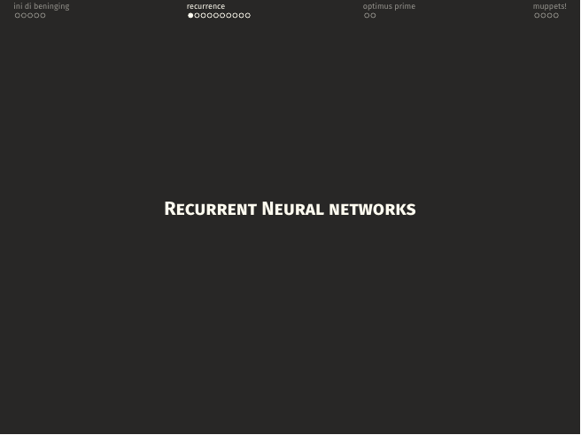
A section divider. The next ten pages are the recurrent story.
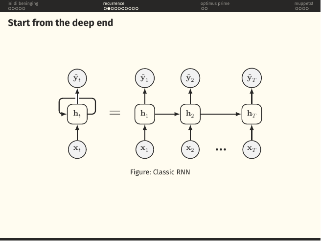
On the slide
The founding picture of the RNN. On the left, a single cell with a loop from its hidden state back to itself. On the right, that same cell drawn out across time, , with each step taking a new input and emitting a prediction .
What it means
The RNN's whole contribution is one word: share. Instead of an MLP with a separate weight matrix for each timestep, you have one matrix that gets applied over and over. Whatever the network learns about how to update its memory when it sees a verb at step 3, it also uses at step 47. That parameter sharing is what makes learning from sequences tractable at all.
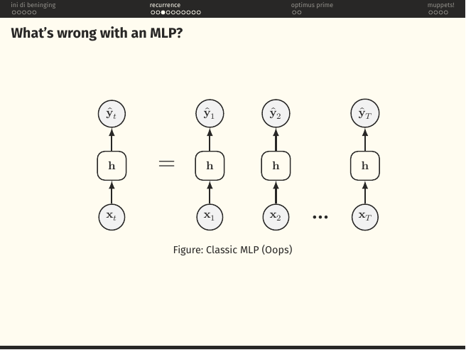
On the slide
The same picture as page 08 with one detail changed: the horizontal arrows between hidden states are gone. Now it is just a stack of independent MLPs, one per timestep.
What it means
This is what an MLP would do if you naively applied it word-by-word. Each step processes its input in isolation. Nothing carries forward. Feed it "not bad" and the "bad" step has no idea it was just negated. This is the context problem, and the horizontal arrow of the previous slide, the recurrence, is the whole answer.
"But couldn't you just widen the MLP's input to include a window of the last few words?" You can, and people did, the original n-gram neural language model of Bengio et al. But a fixed window is not the same as unbounded memory. The RNN's promise, at least on paper, is that it can carry information forward as long as it needs to.
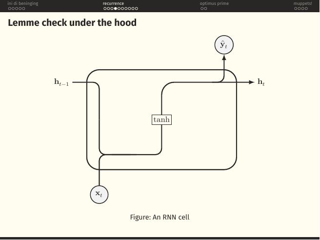
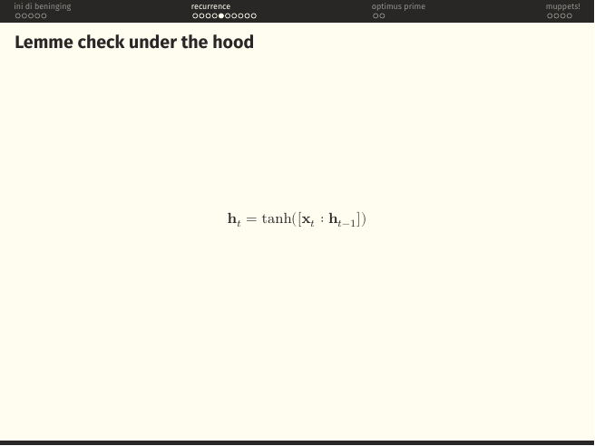
On the slide
The vanilla RNN cell, opened up. The previous hidden state and the current input are concatenated, pushed through a single learned linear layer, and squashed by a . The result is both the new hidden state and (after one more projection) the output .
What it means
The compact form is:
Note what "concatenate then multiply by " secretly is: . Two matrices masquerading as one. Everyone writes it the concatenated way because it looks tidier on a slide.
Backpropagating through a chain of the same multiplies gradients by the same Jacobian at every step. If its spectral radius is above 1, gradients blow up; below 1, they die. This is the vanishing / exploding gradient problem, and it is exactly what LSTMs and GRUs were invented to fix.
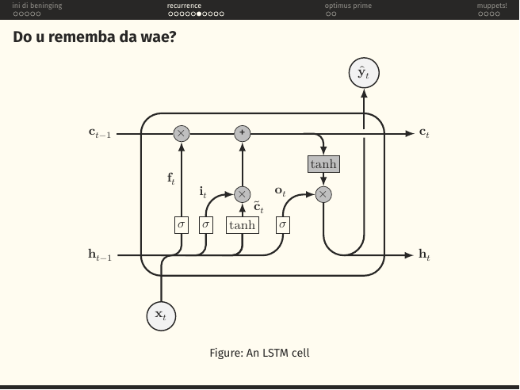
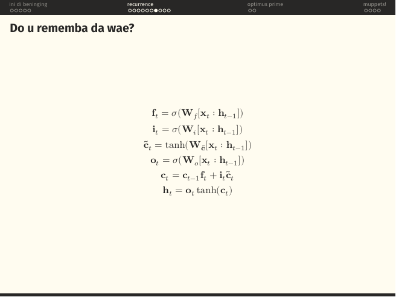
On the slide
The Long Short-Term Memory cell (Hochreiter & Schmidhuber, 1997), a vanilla RNN's better-behaved cousin. It carries two states, not one: an internal cell state that runs along the top of the diagram like a conveyor belt, and the usual hidden state . Three sigmoid gates decide what to do with the belt:
- Forget gate , multiplies the old cell state elementwise. Zero means forget, one means keep.
- Input gate , decides how much of the new candidate to add.
- Output gate , decides how much of the (tanh'd) cell state to expose as the new hidden state.
What it means
The magic is the top wire: the cell state passes through only additive updates and elementwise multiplications by a sigmoid. There is no repeated matrix multiply on that path. So when you backpropagate along the belt, gradients survive across dozens of timesteps rather than vanishing after five. That, and nothing else, is why LSTMs beat vanilla RNNs on real sequence tasks for two decades.
Each gate is its own tiny MLP: , and similarly for . Four gates, four weight matrices, one cell. Roughly 4× the parameters of a vanilla RNN.
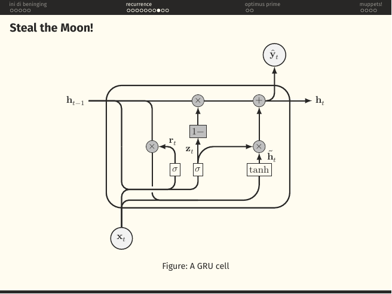
On the slide
The Gated Recurrent Unit (Cho et al., 2014), the LSTM stripped down. Two gates instead of three, and no separate cell state at all, the hidden state doubles as the memory.
- Reset gate , decides how much of the old hidden state feeds into the candidate.
- Update gate , a single knob that interpolates between "keep old" and "take new". The diagram's block is what makes this a convex mixture.
What it means
Formally: . Fewer parameters than an LSTM, comparable performance on most tasks, faster to train. The empirical answer to "do we really need three separate gates?" turned out to be: often, no.
The playful title "Steal the Moon!" refers to the LSTM's cell state going away, the GRU quietly absorbs it into the hidden state. Less machinery, same gradient-preserving trick, because the update gate lets the model choose to just copy forward unchanged.
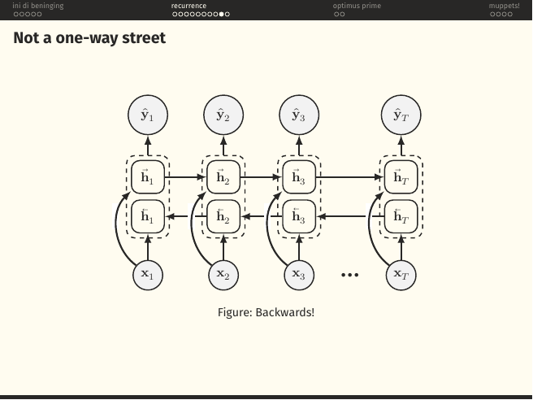
On the slide
A bidirectional RNN. Two independent recurrent passes over the same input: one left-to-right () and one right-to-left (). At each timestep the two are concatenated before predicting .
What it means
A unidirectional RNN's hidden state at step knows about the past but not the future. That is fine when you are generating, one token at a time. It is a real limitation when you are tagging, labelling every word in a sentence, because "bank" in "river bank" needs the word "river" to disambiguate, and "river" comes after in some dialects of the same idea. The bidirectional variant fixes this at the cost of doubling the compute and forbidding streaming inference.
ELMo, the first muppet on page 20, is essentially a two-layer bidirectional LSTM. And BERT, on page 21, generalises the same "read both directions" instinct to attention.
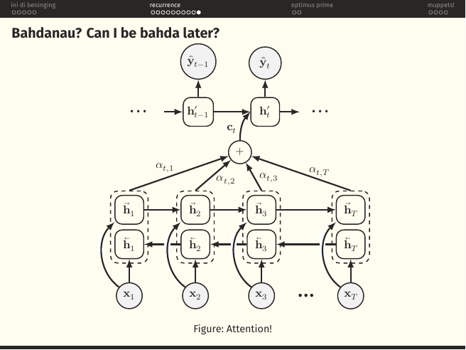
On the slide
The single most important slide in this section. Bahdanau, Cho and Bengio's 2015 attention mechanism, drawn over an encoder-decoder architecture. The encoder is a BiRNN. The decoder, at each step , does not receive a single fixed context vector; it receives a weighted sum of the encoder hidden states, where the weights are computed on the fly.
What it means
Before Bahdanau, the entire source sentence in a neural translation model was squeezed into one fixed-size vector. Long sentences failed because you cannot cram a paragraph into 512 floats without loss. Attention broke the bottleneck: at every decoder step, the model gets to look at the encoder states directly and decide which ones matter for the word it is about to emit. The weights are a soft version of "which source word am I translating right now".
This is the moment the transformer becomes almost inevitable. Once you have attention, the recurrence is doing less and less useful work, it is just providing an ordering. Vaswani et al. (2017) will remove the recurrence entirely and keep only the attention. That is the next section.
The alignment score is passed through a softmax to get . In Bahdanau's paper is a small MLP; in Luong's follow-up it is just a dot product. The dot-product version is the seed of scaled dot-product attention.
§3optimus prime(the transformer takes over)
Two slides that compress the whole Attention Is All You Need paper into six equations. Deliberately terse: the full transformer lecture is still to come.
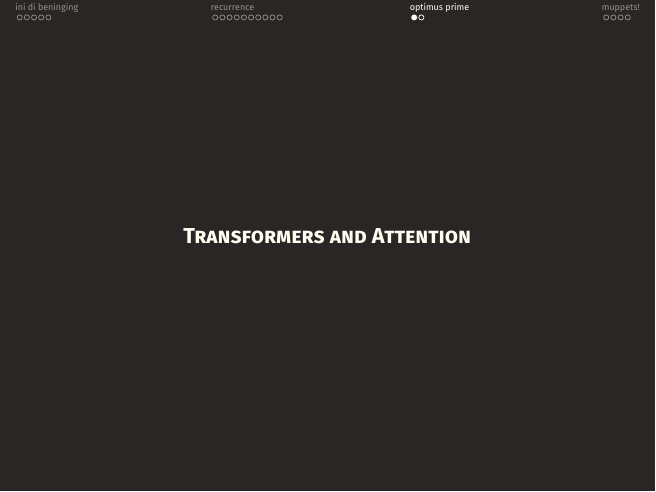
A section divider. The recurrence is gone; attention is the whole engine now.
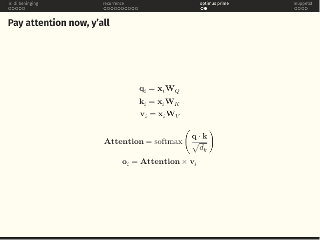
On the slide
The attention operation in six lines. Each input vector is projected three ways into a query , a key and a value by three learned matrices . The attention weights are:
And the output at position is the corresponding weighted sum of value vectors.
What it means
The database metaphor is exact: every position gets to query every other position, matches its query against those positions' keys, and pulls back a soft-lookup of the corresponding values. The in the denominator is not decorative: without it, at large the dot products grow, the softmax saturates, gradients vanish, and training stalls. Vaswani et al. discovered this scaling empirically and it is now folklore.
Notice what is missing. No recurrence. No convolution. The only interaction between positions is this one softmax over dot products. Every position in a sequence talks directly to every other position in one layer, at the price of memory. Almost everything that happens later in the course, Flash Attention, sparse attention, state space models, is a reaction to that quadratic cost.
The full architecture, multi-head attention, positional encodings, residual connections, layer norm, the feed-forward block, is expanded in Lecture 3. This slide is the seed.
§4muppets(BERT and friends)
Four slides on the family of pretrained encoders that inherited the earth after 2018. Called "muppets" because the naming convention started with ELMo and BERT and stayed there (ERNIE, KERMIT, ROBERTA, and so on).
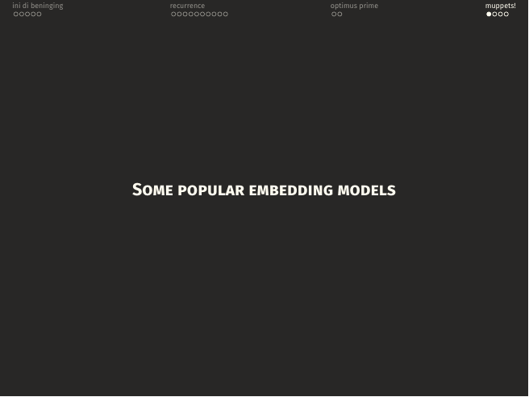
A section divider. From this page on, "embedding model" means contextual embedding: the vector for a word depends on the sentence it sits in.
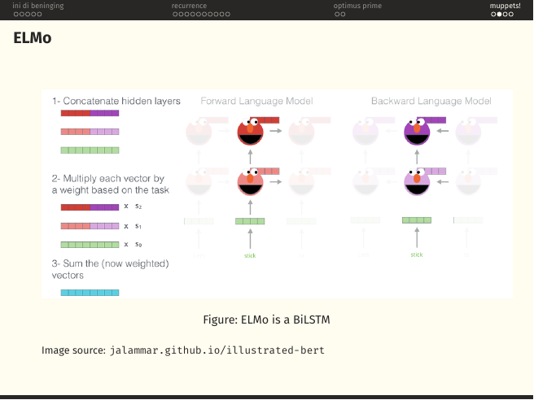
On the slide
ELMo (Embeddings from Language Models, Peters et al. 2018) built on top of a two-layer bidirectional LSTM language model. For any word in a sentence, it stacks the forward and backward LSTM hidden states at every layer, weighs them by task-learned scalars , and sums the result into one contextual vector.
What it means
Word2Vec gave you one vector per word, forever. ELMo gave you a different vector for "bank" depending on whether it appeared next to "river" or next to "loan". That single shift, from a lookup table to a function of the sentence, is what made the muppet era possible.
The task-learned weights are the point. Different downstream tasks care about different layers: syntactic tasks lean on the lower layer, semantic tasks on the upper. Letting the task pick its own mixture is why ELMo dominated the GLUE benchmarks in 2018.
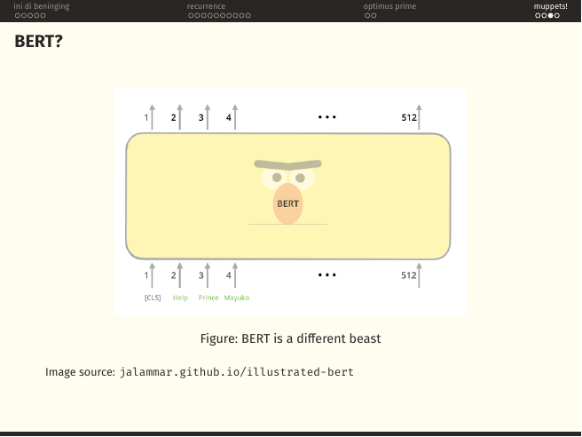
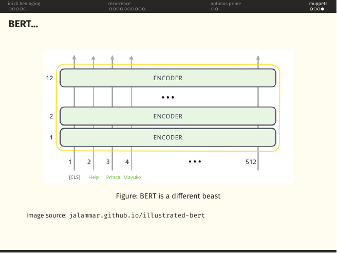
On the slide
Two views of the same object. First, BERT as a friendly yellow blob: 512 tokens go in, 512 contextual vectors come out. Then, the blob opened up to reveal 12 identical transformer encoder blocks stacked on top of each other. (BERT-large uses 24.)
What it means
BERT (Devlin et al., 2018) is what you get when you take the transformer encoder from section §3, throw away the decoder entirely, and pretrain the encoder on two self-supervised objectives on a mountain of text:
- Masked Language Modelling. Randomly hide 15% of the input tokens and ask the encoder to guess them back. Because attention is bidirectional inside an encoder, the model gets to look both left and right, the muppet update of ELMo's core trick.
- Next Sentence Prediction. Given two segments, decide whether the second one follows the first. Later work (RoBERTa) showed this objective barely helps; the MLM does most of the heavy lifting.
Once pretraining is done, you attach a tiny task-specific head to the vector (for classification) or to the per-token outputs (for tagging) and fine-tune. That is the whole recipe.
The single most striking thing about BERT is how ordinary the architecture is. It is literally a stack of the encoder blocks defined on page 18. The revolution was the training objective and the scale, not the model. Every "encoder-only" descendant, RoBERTa, DeBERTa, ELECTRA, is a variation on which mask, which loss, and how much data.
The [CLS] token, WordPiece tokenisation, positional embeddings and the specifics of BERT's pretraining will come back on the transformer lectures and in the mid-sem exam. The 2023 mid-sem paper leans on this material heavily.
§5fin
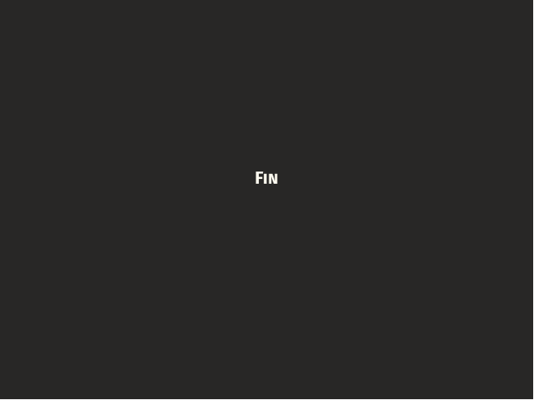
On the slide
The end card. Fin. From atomic one-hot vectors to a stack of twelve transformer encoder blocks, in twenty-two slides.
What it means
If you sat with every page here you now have the whole ladder in view: Word2Vec teaches you that words can live in a geometry; the MLP teaches you what a learned function looks like; the RNN teaches you why sequence order matters and why plain backprop through time is a nightmare; LSTM/GRU teach you the additive-path trick that saves gradients; attention teaches you that you can just look instead of remember; the transformer removes the crutch of recurrence entirely; and BERT shows that once you have a good encoder, all of NLP starts to look like fine-tuning one big pretrained model. The rest of this course is what happened next.
Straight into the mid-sem papers. The 2023 mid-sem is essentially a comprehension test on the material of this tutorial.